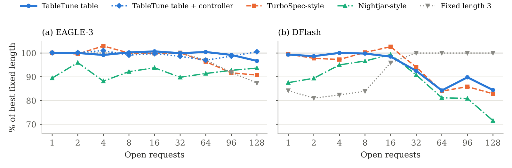
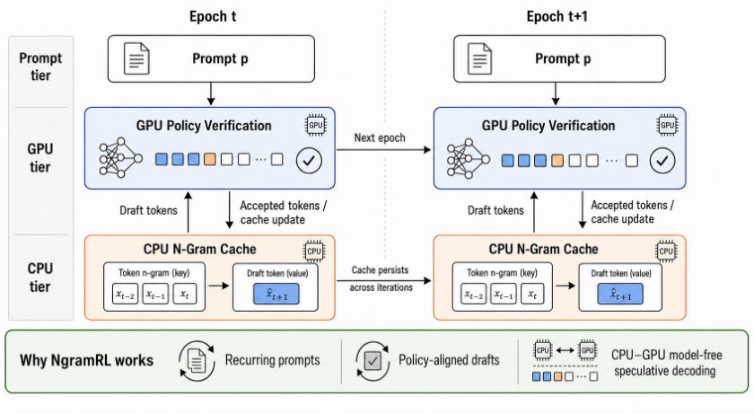
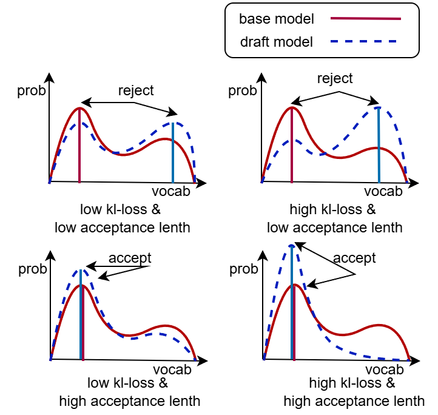

目录 · 8 节
1它到底在解决什么问题？2整体思路：耗时离线测一次，猜中率线上跟3tuner：把每一格实测出来4controller：流量变了，表也跟着变5实测：它真的更好吗？6我认为它的局限7一个推理服务团队可以怎么试8结论vLLM 文档里那张按批大小决定投机解码每步猜几个 token 的配置表，换一种 GPU 或模型就可能明显拖慢吞吐；这篇论文给出一个几分钟就能把最优表实测出来、上线后还能随流量自动修正的工具。投机解码只在 GPU 还有空闲算力时才划算：同一批里的请求越多，小模型每步该替大模型猜的 token 就该越少。vLLM 让运维按批大小手写一张猜几个的表，但没人去测这张表对不对，有用户报告开了投机反而比不开还慢。TableTune 在 vLLM 自己的服务路径上把每种批大小、每种猜测长度都实测一遍，几分钟算出吞吐最高的表。上线后，插件读取 vLLM 记录的猜中次数，结合测好的单步耗时，重算每种批大小下每秒能产出多少有效 token，挑最高的长度重写这张表。在一个 MoE 模型上，以每种负载下最快的固定猜测长度为基准，vLLM 文档里给的表最多慢 18%，实测出来的表最多慢 3%。这张表应该测出来，而不是照抄文档。
它到底在解决什么问题？
下文把 drafter 每步替大模型猜的 token 数叫猜测长度，记作 k。
问题在于猜是有代价的。GPU 空闲时，decode 一步主要在等显存读权重，多算几个 token 几乎白送；批里请求一多，算力被占满，每多猜一个 token 都会拖慢整步。下面用一个示意场景说明：同一个服务，夜里只有 4 个并发请求，白天高峰有 128 个。
| 场景（示意） | 猜 3 个 | 猜 1 个 | 哪个更快 |
|---|---|---|---|
| 夜里 4 个请求 | 每步多花 10%，每步平均多出 1.2 个 token | 每步多花 3%，多出 0.7 个 token | 猜 3 个 |
| 高峰 128 个请求 | 每步多花 45%，多出的 token 不变 | 每步多花 12% | 猜 1 个 |
猜中带来的 token 数不随负载变，可每步的代价随批大小涨，所以最优长度会随负载移动。论文图 1 是真实测量：在 H100 上跑 Qwen3-4B 加 EAGLE-3 drafter，低负载时猜 3 个最快、128 个请求时猜 1 个最快；固定猜 1 个在 1 个请求时慢 15%，固定猜 3 个在 128 个请求时慢 12%。

vLLM 的 Dynamic Speculative Decoding 功能已经支持按批大小查表：运维写一张表，比如文档里的例子“批大小 64 以内猜 3 个，再大一些猜 1 个，更大就不猜”。表是手写的，常常直接抄文档，没有任何东西去检查它。作者引用的用户报告里，有人在 H100 上开了这个功能，比完全不投机还慢 21% 到 31%，说明一张不合适的表足以把投机的收益全部吃掉。最优的表还随 GPU 变，因为老 GPU 每一步本来就慢、空闲算力少：作者测出的表在 T4 上批大小到 19 就改猜 2 个，在 H100 上要到 51 才改。
整体思路：耗时离线测一次，猜中率线上跟
作者先把影响最优长度的两个量拆开。一步要花多久，取决于硬件、推理引擎和批大小，相对稳定，可以离线测一次。猜中的比例取决于流量内容，会漂，要在线上跟。TableTune 按这个分工分成两部分：
| 部分 | 什么时候跑 | 输入 | 产出 |
|---|---|---|---|
| tuner | 离线，每种 GPU、引擎、模型、drafter 组合跑一次 | 真实 drafter 和大模型、160 条样本 prompt | 每个批大小、每个长度的单步耗时，每个位置的猜中率，一张 vLLM 格式的表 |
| controller | 线上，作为 vLLM 插件 | vLLM 调度器每步记下的猜了几个、留了几个 | 定期重建的新表，单步耗时始终用 tuner 测的 |
两部分用的是同一个目标：每秒保留下来的 token 数，论文叫 goodput。
B 是这一步批里的请求数， 是批大小 B、猜 k 个时一步的耗时， 是每个请求每步平均保留的 token 数。，那个 1 是大模型自己补的 token， 是前 i 个猜测全部被接受的概率。注意 不是第 i 个猜测单独猜中的概率：只要前面有一个猜错，后面的猜测就全作废。
用一个能心算的例子（示意）：、、，那么猜 1 个时 ，猜 3 个时 。如果某个批大小下猜 1 个一步 5 ms、猜 3 个一步 8 ms，每个请求每毫秒分别得到 0.34 和约 0.31 个 token，这一档就该猜 1 个；换到小批，假设猜 1 个降到 4.5 ms、猜 3 个降到 6 ms，就变成约 0.38 对 0.42，改猜 3 个。下面拆开讲这两个输入怎么得到。
tuner：把每一格实测出来
第一步是测单步耗时。对每个长度 k（从 0 到允许的最长长度 K），tuner 用真实的 drafter 启动 vLLM，配一张只有一段的表“所有批大小都猜 k 个”，这样计时走的就是线上服务的同一条路径，包括线上会用的 CUDA graph 模式。对每个批大小 B，它发 B 条约 32 个 token 的 prompt，一次只要 1 个输出 token，一次要 65 个，两次的耗时差除以 64，就是一步的耗时。每个批大小和猜测长度的组合都重复测三次取中位数；批大小 16 以内每个都测，之后每隔 4 到 8 测一个，直到最大批大小。
为什么计时时要让 vLLM 拒绝所有猜测？如果猜中了，有的请求一步前进好几个 token，会提前结束，批大小在计时中途就变了。用 vLLM 的测试模式拒绝全部猜测，每步照样做完整的起草和校验，但 B 个请求每步都只前进 1 个 token、一起结束，批大小始终是 B。猜中带来的好处之后通过 加回去。代价是随猜中数量增长的那部分工作没有被测到，这一点后面会出问题。
第二步是测猜中率。tuner 用最长长度 K 在 160 条样本 prompt 上跑，温度和线上一致，然后读 vLLM 公开的两个指标：一共起草了几次，以及每个位置 i 有几次被保留。两者相除就是 。跑一次就够覆盖所有更短的长度，因为猜 k 个的草稿就是猜 K 个草稿的前 k 个。
最后一步是造表：每个批大小算出所有长度的 goodput，挑最高的。为了不让表因为几乎打平的长度碎成很多段，tuner 规定：除非另一个长度好 0.5% 以上，否则沿用上一个批大小的长度。整个测量在 H100 上约 8 分钟。
controller：流量变了，表也跟着变
tuner 的猜中率来自样本 prompt，线上流量一变就过时。controller 是一个 vLLM 插件，不改引擎，也不加埋点，只用调度器本来就记录的计数：每个请求这一步猜了几个、留了几个。它给每个位置维护两个累计数：猜到过这一位的次数，和这一位被保留的次数。比如一个请求猜了 3 个、留下 2 个，前三位的“猜过”各加一次，前两位的“保留”各加一次，因为校验在第一个猜错处就停，留下的总是最前面那几个。
为什么要和离线结果混着用？刚上线时线上计数很少，直接相除会剧烈抖动。controller 每隔 N 步按下式估计：
是 tuner 测的值，w=2000，相当于把离线结果当成 2000 次观测。示意：离线 ，线上第 2 位猜过 2000 次、保留 1200 次，估计值就是 (1000+1200)/4000=0.55。每次重建后线上计数减半，让最近的流量占主导。重建时只更新猜中率，单步耗时一直用 tuner 测的，按上面的公式重新挑每个批大小的长度。可挑的长度默认只限于起始表里出现过的那几个，因为 vLLM 较新的 V2 runner（默认的 V1 runner 一设表就退回分段 CUDA graph，见局限）只为这些长度录好了完整的 CUDA graph。 Hoot 说

这篇论文的贡献是让每个批大小的猜测长度跟着线上流量自动调。先验权重 w 把离线测到的猜中率算作 w 次已经看过的观测。示意：离线第 2 位猜中率 0.5，线上真实是 0.8。只猜过 20 次时 (1000+16)/2020 ≈ 0.50，几乎不动；猜过 2000 次后才到 0.65。拖动滑块看估计怎么随计数移动。 出处: 示意例子，对应论文 §4 controller 的估计公式
这里有一个陷阱：表在某个批大小跑猜 1 个或猜 0 个时，第 2、3 位根本没人猜，controller 学不到它们的猜中率，表就可能卡在短长度上出不来。作者给了两个开关：每 50 步用最长长度跑一步，让每个位置都持续有观测；每次重建把先验的权重也减半，让旧流量的影响逐渐消失。批大小在表的边界附近来回晃时，controller 在离边界 h 以内保持当前长度，避免用户报告的那种在边界两侧来回切换导致吞吐塌掉的情况。
实测：它真的更好吗？
主实验在 H100 上做，同时打开 1 到 128 个请求，比较各方案在最差负载下比当时最快的固定长度慢多少。“最好的单一固定长度”是事后挑出来的、最差负载损失最小的那一个，运维要把每个长度都压测一遍才能找到它。
| 设置（H100，V2 runner） | 实测表最差损失 | 最好的单一固定长度最差损失 |
|---|---|---|
| EAGLE-3，代码 prompt | 4.0% | 3.4%（猜 2 个） |
| EAGLE-3，4-bit AWQ 大模型 | 3.0% | 4.6%（猜 2 个） |
| n-gram，代码改写 | 5.7% | 4.5%（猜 5 个） |
| DFlash，代码 | 11.6% | 19.1%（猜 3 个） |
| EAGLE-3，Spec-Bench 对话 | 3.1% | 3.9%（猜 3 个） |
在单张 H100、128 个请求以内，挑对的单一长度几乎一样安全，表的价值在于不用逐个压测就能找到它。差别出现在单一长度撑不住的地方。MoE 模型 Qwen3-30B-A3B 上，批越大激活的专家越多，不投机的一步从 4.7 ms 涨到 19.7 ms，而猜 3 个的额外开销反而从 61% 降到 31%，所以投机在高负载也划算。文档里的表按稠密模型写，64 个请求以上改猜 1 个，在 96 个请求时慢 17.5%；实测表在所有负载上都在 2.9% 以内。在 T4 和 A10G 这些老 GPU 上，每个固定长度都会在某个负载慢 7.6% 到 43.6%，实测表在 2.3% 到 5.2% 以内。
和已有的自适应方法比，作者在同一个引擎上重新实现了 TurboSpec 和 Nightjar 两种思路。TurboSpec 式每步用一个拟合出来的线性耗时模型选长度，Nightjar 式给每个批大小单独跑一个 bandit。

EAGLE-3 上实测表最差慢 3.3%，TurboSpec 式慢 9.3%，Nightjar 式慢 11.8%。TurboSpec 式输在拟合：批大小 80、猜 3 个时实测一步 9.7 ms，线性模型给出 8.0 ms，于是它把猜 3 个一直用到约 100 的批大小，而实测数据在 50 以上就该换成猜 2 个。这说明单步耗时里存在线性模型抓不住的跳变，只能实测，不能拟合。Nightjar 式在每个负载都慢 4% 到 12%，因为每个批大小各学各的，一直在试错。
controller 的修复能力也测了。作者故意从一张配错的表开始：把文档表的每个区间缩小到四分之一，批大小 32 以上就改猜 0 个（drafter 仍在跑，见下文局限第三条）。H100 上 controller 把吞吐最多提高 58%，在每个负载都追到实测表的水平，说明只靠线上猜中率加离线耗时就能把表修回来。换流量的实验里，DFlash 先跑代码再切到数学题，旧表慢 10.8%；controller 在第一分钟内重建出数学题的表，补回了 96% 的差距，所以流量内容变了也不用重新压测。
最后是 llm-d 的官方部署方案，两个 Qwen3-32B 副本、每个用两张 H100 做张量并行，只改配置。256 个请求以上，实测表比固定猜 3 个快 20% 到 32%，比文档表快 7% 到 25%；从文档表起步，controller 把吞吐提高 9% 到 29%。这说明在接近生产的多副本部署里，高负载才是表真正值钱的地方。
我认为它的局限
第一，好处高度依赖引擎。vLLM 默认的 V1 runner 一旦设了表，就把完整 CUDA graph 换成分段的，H100 上凡是带小模型的 drafter，设了表都要慢 30% 到 43%（不跑模型的 n-gram 只慢 5.2%）；只有 V2 runner 给每个长度保留完整 graph，损失才消失。而 V2 的这个 nightly 版本在表从猜 2 个切到猜 1 个时会卡住，作者在 llm-d 里只能部署绕开这一步的表。
第二，profile 看不到随猜中数量增长的工作。DFlash 猜 8 个时，线上一步实际耗时是 profile 的 1.3 到 1.9 倍，表因此在 34 到 87 的批大小上最多比固定猜 3 个慢 16%，128 个请求时仍差 10%。controller 只更新猜中率，修不了这种耗时误差。
第三，表里的“猜 0 个”不是真正关掉。EAGLE 类 drafter 在长度 0 时仍在跑、仍维护自己的 KV cache，H100 上比完全不投机慢 19% 到 22%。真正该关投机的高负载区间，这张表帮不上忙。
一个推理服务团队可以怎么试
- 先确认引擎版本：用完整 CUDA graph 分别测最好的固定长度和不投机，如果设了表反而更慢，先别上表。
- 在自己的 GPU 和模型上跑一次 tuner，把测出的表和当前手写的表放到同一套压测里，重点看高并发那一段，判断标准是最差负载下的损失。
- 用一周真实 prompt 重测猜中率（约 2 分钟），看表的边界移动多少；移动明显再开 controller，并按作者建议同时打开探索和先验衰减。
- 如果用的是一次猜很多个的 drafter（如 DFlash），抽几个批大小对照线上实际单步耗时和 profile，差得多就别完全相信表。
结论
一句话：投机解码的猜测长度表要按 GPU、引擎和模型实测，再随流量更新，照抄文档在高负载和 MoE 模型上会明显丢吞吐。
| 维度 | 评价 |
|---|---|
| 问题重要性 | 中高。vLLM 用户直接会碰到，文档表在 MoE 上最多慢 17.5%，多副本高负载下实测表比它最多快 25% |
| 方法创新性 | 中。goodput 目标和按批大小选长度都来自已有工作，贡献在于实测网格和插件化落地 |
| 实验证据 | 较强。三种 GPU、四种 drafter、llm-d 端到端，每个数字都能从 vLLM 指标核对；但只有单节点、短 prompt |
| 工程成本 | 低。一条命令测 8 到 45 分钟，插件不改引擎 |
| 是否值得尝试 | 值得，前提是用的是带完整 CUDA graph 的 V2 runner |
读完这篇，你觉得
夜读鸮记下了，谢谢你的反馈。
点一下即可，无需登录；再点一次撤回。只统计匿名次数，不记录你是谁。
相关论文RELATED

Infra · 2026-10-27NgramRL: Accelerating RL Post-Training for Structured Generation via Rollout-Aware N-gram Speculative Decoding大模型强化学习后训练里，生成回答常常占到训练时间的七成以上。这篇论文注意到，同一道题在前几轮训练中生成过的回答很像这一轮要生成的内容，可以直接拿来当草稿。他们提出 NgramRL，每道题只用自己最近几次的回答建一个 n-gram 草稿表。生成时拿当前回答的最后几个词去表里查，把表中接在后面的内容当草稿，大模型一次验证多个 token，不需要额外的草稿模型，也不占 GPU 显存，生成结果的分布也不变。在推理和结构化生成任务上，缓存预热后大模型每次前向能确认 3.6 到 7.8 个 token，最多是 SuffixDecoding 的 2 倍，后者是用全局历史回答建后缀树查草稿的同类方法。
Infra · 2026-10-23RCSD: Reinforcement and Continual Learning for Domain-Specific Speculative Decoding海信的 RCSD 在用 HASS 蒸馏训好的投机解码草稿模型上，再用 DPO 或 GRPO 继续训练：目标模型自己生成的序列为"好"，目标与草稿交替生成的序列为"差"，GRPO 版用接受率打分。Qwen3-1.7B 和 Llama-3.1-8B 上，四个数据集、草稿步数 3–6 的接受长度都高于 HASS，例如 Qwen3-1.7B 在 GSM8K、步数 6 时从 2.176 到 3.246；Llama-3.1-8B 在 ShareGPT 上吞吐从 142.3 到 176.6 token/s。论文没有给出生成质量评测。 Infra · 2026-11-03LEAP: Efficient LLM Inference Scheduling with Generalizable Length Prediction让短请求先跑能明显降低平均延迟，前提是提前知道每个请求大概要生成多长，而现有的长度预测器换个领域排序就会变差，本身还要占 GPU。LEAP 发现，服务模型做 prefill 时算出的隐藏状态里已经带着输出长度的信号，在一层隐藏状态上接一个线性层就能读出来，不用另跑一个编码器。这个线性层放在 CPU 上算，和 GPU 上剩下的 prefill 同时进行，不占 GPU。每个请求结束后，LEAP 用递推最小二乘法拿这条请求的真实长度按公式直接修正线性层权重，不用算梯度，也不用回放旧数据。在 ShareGPT 流量的单卡实验里，平均每个 token 的延迟比几种现有预测器低 15.9% 到 40.8%。长度预测好不好，要看调度后的延迟和预测本身的成本。
Infra · 2026-11-03LEAP: Efficient LLM Inference Scheduling with Generalizable Length Prediction让短请求先跑能明显降低平均延迟，前提是提前知道每个请求大概要生成多长，而现有的长度预测器换个领域排序就会变差，本身还要占 GPU。LEAP 发现，服务模型做 prefill 时算出的隐藏状态里已经带着输出长度的信号，在一层隐藏状态上接一个线性层就能读出来，不用另跑一个编码器。这个线性层放在 CPU 上算，和 GPU 上剩下的 prefill 同时进行，不占 GPU。每个请求结束后，LEAP 用递推最小二乘法拿这条请求的真实长度按公式直接修正线性层权重，不用算梯度，也不用回放旧数据。在 ShareGPT 流量的单卡实验里，平均每个 token 的延迟比几种现有预测器低 15.9% 到 40.8%。长度预测好不好，要看调度后的延迟和预测本身的成本。
讨论
欢迎补充实验细节、复现经验或不同看法。需 GitHub 登录。
正在加载讨论…